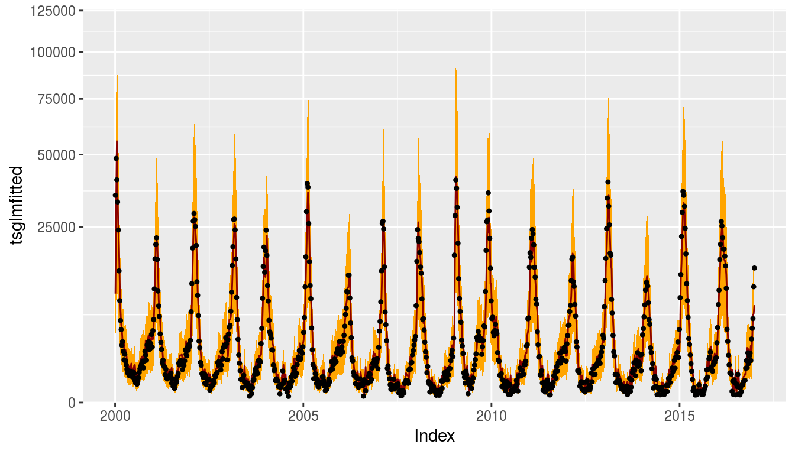
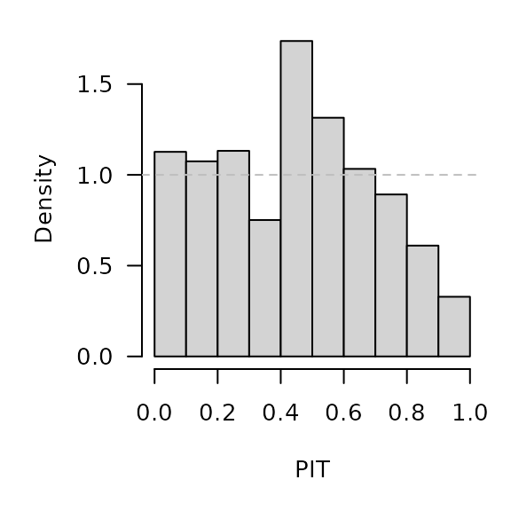
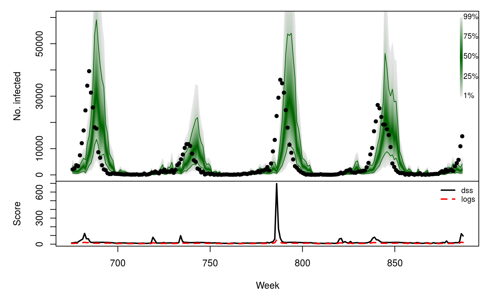

tscount::tsglm
vignettes/extra/CHILI_tscount.Rmd
CHILI_tscount.Rmdoptions(digits = 4) # for more compact numerical outputs
library("HIDDA.forecasting")
library("ggplot2")
source("../setup.R", local = TRUE) # define test periods (OWA, TEST)In this vignette, we use forecasting methods provided by:
The corresponding software reference is:Liboschik T, Fried R, Fokianos K, Probst P (2017). tscount: Analysis of Count Time Series. R package version 1.4.1, https://CRAN.R-project.org/package=tscount.
Construct the matrix of covariates, including yearly seasonality and a Christmas effect as for the other models (see, e.g., vignette("CHILI_hhh4")):
X <- t(sapply(2*pi*seq_along(CHILI)/52.1775,
function (x) c(sin = sin(x), cos = cos(x))))
X <- cbind(X,
christmas = as.integer(strftime(index(CHILI), "%V") == "52"))Fitting a NegBin “time-series GLM” with a log-link, regressing on the counts from the last three weeks (autoregression) and on the conditional mean 52 weeks ago (for seasonality, so we omit the sine-cosine covariates):
tsglmfit <- tsglm(CHILI, model=list(past_obs=1:3, past_mean=52),
xreg=X[,"christmas",drop=FALSE], distr="nbinom", link="log")
summary(tsglmfit)##
## Call:
## tsglm(ts = CHILI, model = list(past_obs = 1:3, past_mean = 52),
## xreg = X[, "christmas", drop = FALSE], link = "log", distr = "nbinom")
##
## Coefficients:
## Estimate Std.Error CI(lower) CI(upper)
## (Intercept) 1.1129 0.1900 0.7405 1.4854
## beta_1 0.9094 0.0838 0.7452 1.0736
## beta_2 0.2202 0.1330 -0.0405 0.4808
## beta_3 -0.2907 0.0876 -0.4624 -0.1189
## alpha_52 0.0398 0.0328 -0.0244 0.1040
## christmas -0.3822 0.1717 -0.7189 -0.0456
## sigmasq 0.2782 NA NA NA
## Standard errors and confidence intervals (level = 95 %) obtained
## by normal approximation.
##
## Link function: log
## Distribution family: nbinom (with overdispersion coefficient 'sigmasq')
## Number of coefficients: 7
## Log-likelihood: -6982
## AIC: 13979
## BIC: 14012
## QIC: 459385CHILIdat <- fortify(CHILI)
CHILIdat$tsglmfitted <- fitted(tsglmfit)
CHILIdat <- cbind(CHILIdat,
sapply(c(tsglmlower=0.025, tsglmupper=0.975), function (p)
qnbinom(p, mu = fitted(tsglmfit), size = tsglmfit$distrcoefs)))ggplot(CHILIdat, aes(x=Index, ymin=tsglmlower, y=tsglmfitted, ymax=tsglmupper)) +
geom_ribbon(fill="orange") + geom_line(col="darkred") +
geom_point(aes(y=CHILI), pch=20) +
scale_y_sqrt(expand = c(0,0), limits = c(0,NA))
We compute 213 one-week-ahead forecasts from 2012-W48 to 2016-W51 (the OWA period). The model is refitted at each time point.
For each time point, refitting and forecasting with tsglm takes about 3 seconds, i.e., computing all one-week-ahead forecasts takes approx. 10.7 minutes … but we can parallelize.
tsglmowa <- t(simplify2array(surveillance::plapply(X = OWA, FUN = function (t) {
tsglmfit_t <- update(tsglmfit, ts = tsglmfit$ts[1:t],
xreg = tsglmfit$xreg[1:t,,drop=FALSE])
c(mu = predict(tsglmfit_t, n.ahead = 1, newxreg = tsglmfit$xreg[t+1,,drop=FALSE])$pred,
size = tsglmfit_t$distrcoefs[[1]])
}, .parallel = 3)))
save(tsglmowa, file = "tsglmowa.RData")## CAVE: tscount's pit() only uses the first of 'distrcoefs'
## pit(response = CHILI[OWA+1], pred = tsglmowa[,"mu"],
## distr = "nbinom", distrcoefs = tsglmowa[,"size"])
surveillance::pit(
x = CHILI[OWA+1], pdistr = pnbinom,
mu = tsglmowa[,"mu"], size = tsglmowa[,"size"],
plot = list(ylab = "Density")
)
## CAVE: tscount's scoring() only uses the first of 'distrcoefs'
## scoring(response = CHILI[OWA+1], pred = tsglmowa[,"mu"],
## distr = "nbinom", distrcoefs = tsglmowa[,"size"])
tsglmowa_scores <- surveillance::scores(
x = CHILI[OWA+1], mu = tsglmowa[,"mu"],
size = tsglmowa[,"size"], which = c("dss", "logs"))
summary(tsglmowa_scores)## dss logs
## Min. : 7.8 Min. : 4.87
## 1st Qu.: 12.7 1st Qu.: 7.29
## Median : 15.5 Median : 8.87
## Mean : 24.5 Mean : 9.68
## 3rd Qu.: 19.8 3rd Qu.:10.95
## Max. :697.1 Max. :48.25tsglmowa_quantiles <- sapply(X = 1:99/100, FUN = qnbinom,
mu = tsglmowa[,"mu"],
size = tsglmowa[,"size"])
osaplot(
quantiles = tsglmowa_quantiles, probs = 1:99/100,
observed = CHILI[OWA+1], scores = tsglmowa_scores,
start = OWA[1]+1, xlab = "Week", ylim = c(0,60000),
fan.args = list(ln = c(0.1,0.9), rlab = NULL)
)